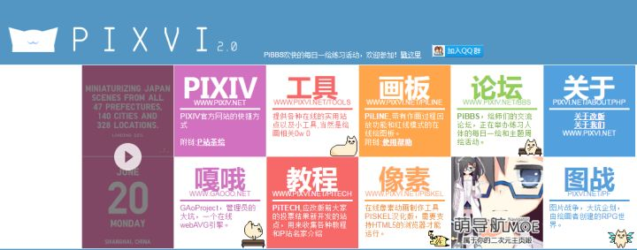
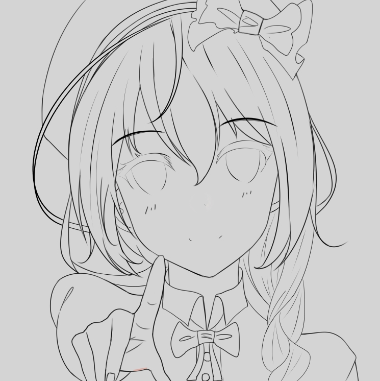
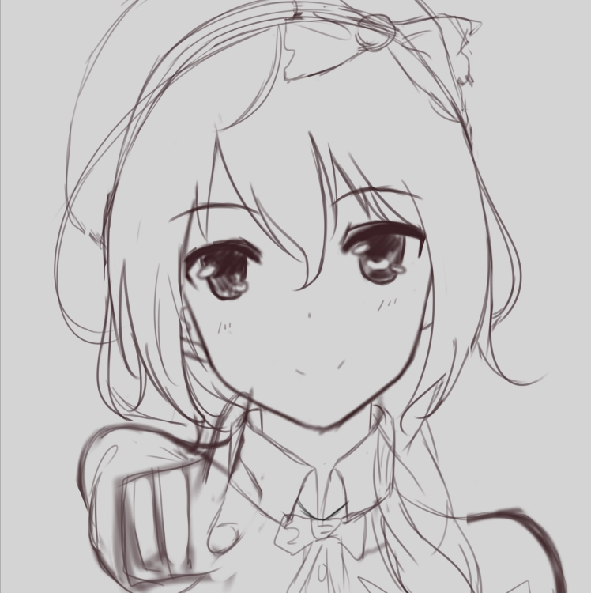
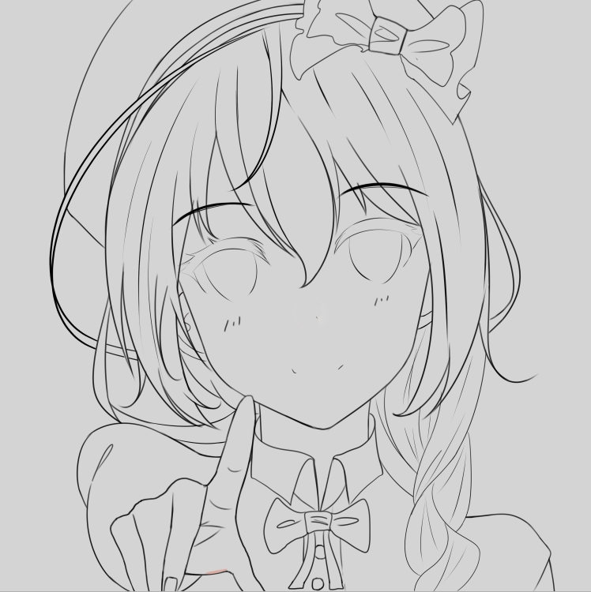
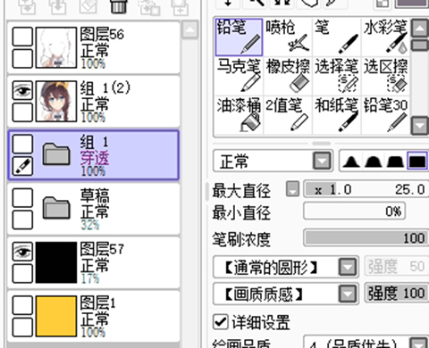
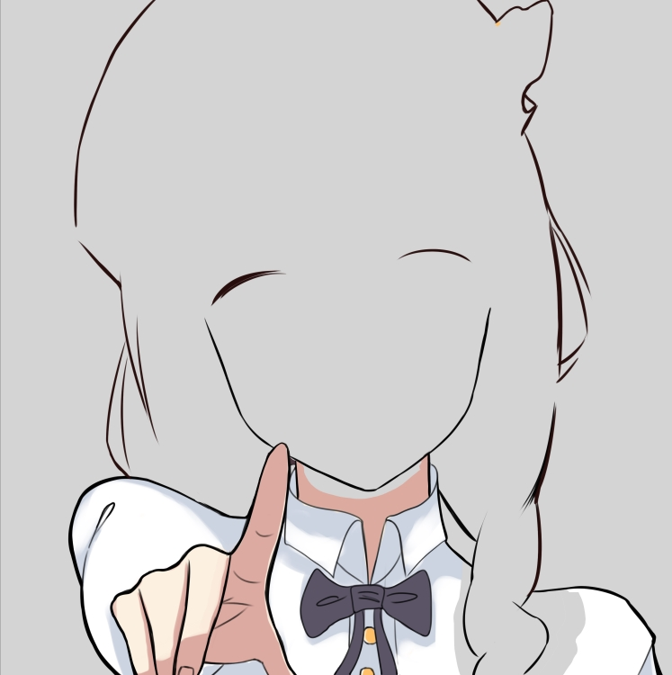

Life is free —— Sai Tutorial
すぐに始まる
首先熟悉sai界面，功能，基本操作，使用技巧,@TN十二夕 推荐的书很有用,进阶可以看@李伟推荐的书那本主要一些绘画技巧和绘画过程展示，对于入门不太合适。
然后本身绘画水平提高。
资源网站：
PIXVI 2.0 - PIXIV绘师支援联盟

这是国内做得比较好的板绘资源站，基本没有门槛而且资料搜索很方便，还有SAI的各种资源，不过数量不算多
技术宅论坛- 画室板块
素材教程软件资源颇多，更新稳定，管理良好，资源丰富。不过需要注册，部分资源需要用户等级到一定程度
才能开启微博- sai资源库 虽然都是无授权转载资源，不过资源的确丰富，
但没有分类，你可以扫一遍微博，看看哪些资料需要。
Sai 作画基本过程：

打开——Sai——选择新建画布
选择画布大小，一般A4纸大小即可，填充黑色，调节不透明度，不然瞎狗眼
...打草稿...

...勾线稿...

...上底色...
...上阴影高光，怎么好看怎么来...
...合并图层...

如果有地方要修改直接修改，没有就可以保存了哦

感谢您浏览。
Life is free —— Listen to me
【关于我】
Karyuu Kou=先森茶一=Life&Free
【关于画画】
-软件：SAI/PS。板子是影拓5，手绘描线是三菱针管笔。
-手/脚/人体/光影/场景/构图/透视/色彩/气氛 etc.关于画画方面的任何问题
不会在私信/评论中回复。想学习还是请去请教专业的老师。
-艺考画室学校报考/我初123高123了想学美术来不来的及/如何兼顾画画和学习/
我真的很喜欢画画但是家里人反对怎么办 etc.
不会在私信/评论中回复。自己的人生自己负责，咨询请找专业人士。
如有上述未涵盖的疑问和需要联络的事情请私信联系我。
本文内容依旧可能会继续修改添加。
最后再次对每一个人看到这里的人和喜欢我的作品的人表示感谢，谢谢你的关注和喜欢。
以上
（’- ’）ﾉｼ
AUTHOR
Karyuu Kou